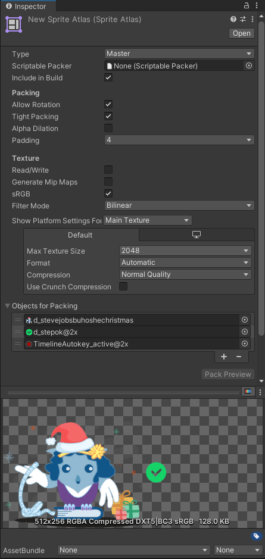

The original version 1 of the SpriteA 2D graphic objects. If you are used to working in 3D, Sprites are essentially just standard textures but there are special techniques for combining and managing sprite textures for efficiency and convenience during development. More info
See in Glossary Atlas system packs textures (from sprites, sprites within textures, and sprites in folders) into an Atlas Texture. It packs these textures when it enters Play mode, or when it builds the Player or an AssetBundle. AssetDatabase V1 can’t have dependencies, and has no importer support for named objects, so Unity packs its Sprite Atlases through a custom mechanism and stores the output data of textures and render data in the Library/AtlasCache folder.
Note: From Unity 2022.2 onwards, the Editor’s Sprite AtlasA texture that is composed of several smaller textures. Also referred to as a texture atlas, image sprite, sprite sheet or packed texture. More info
See in Glossary Mode is set to Sprite Atlas V2 - Enabled by default. Sprite Atlas V2 uses the functionalities exposed by AssetDatabase V2 (ADBV2) such as Cache Server support, which the original Sprite Atlas system didn’t support.
There are no changes to the InspectorA Unity window that displays information about the currently selected GameObject, asset or project settings, allowing you to inspect and edit the values. More info
See in Glossary properties and settings from that of Sprite Atlas V1 except for the following. The imported Sprite Atlas object is located at the bottom of the Inspector.

The Pack Preview window displayed at the bottom of the Inspector window.
Sprite Atlas V2 is automatically enabled by default by the Editor from Unity 2022.2 onwards. If you are upgrading an existing project from an earlier version that used an earlier version of Sprite Atlas, go to Edit > Project Settings > Editor > Sprite Atlas > Mode and select Sprite Atlas V2 - Enabled from the dropdown menu.
When you enable Sprite Atlas V2, the following effects occur:
When you create new Sprite Atlases, they’re automatically set to the selected Mode.
Unity automatically migrates all existing Sprite Atlas V1 assets to Sprite Atlas V2.
Due to the automatic migration, it’s recommended that you make a backup of your Sprite Atlases V1 before you enable Sprite Atlas V2, as assets converted to V2 are incompatible with V1, and Unity can’t revert them to their original state.
The following come into effect when you select the following Sprite Atlas V2 options for the Sprite Atlas Mode:
If you select Sprite Atlas V2 - Enabled, sprites will always use the Sprite Atlas as their texture source, in both Edit and Play modes.
If you select Sprite Atlas V2 - Enabled for Builds, Unity only packs Sprite Atlases when building Players, AssetBundles, or Addressable build scriptsA piece of code that allows you to create your own Components, trigger game events, modify Component properties over time and respond to user input in any way you like. More info
See in Glossary. When the Editor is in Edit mode, sprites continue to use their original textures and not textures from a packed Sprite Atlas.